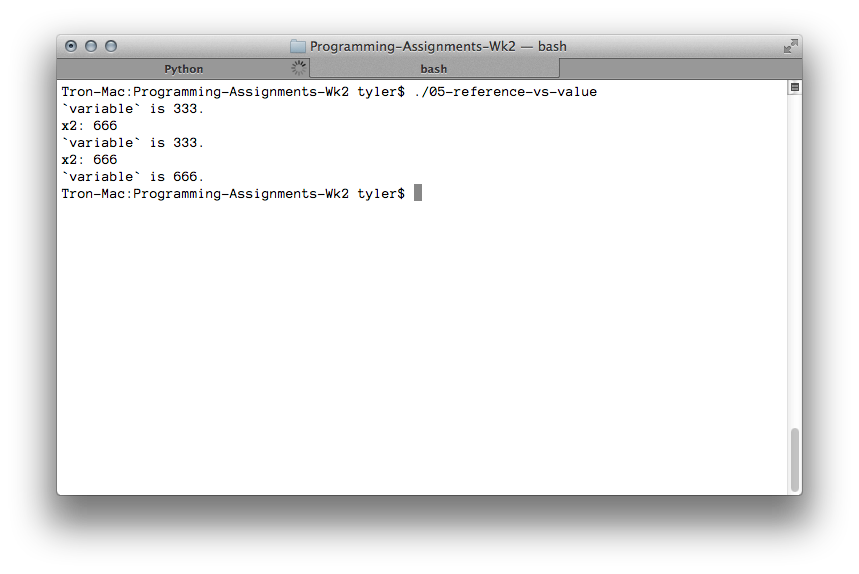

---

layout: default
title: 05-reference-vs-value

---

{% highlight c++ %}
// Tyler Mumford, 2014
// Demonstrates call-by-reference vs call-by-value

#include <stdio.h>

void timesTwoByValue (int);
void timesTwoByReference (int *);

int main () {
	int variable = 333;

	printf("`variable` is %d.\n", variable);

	timesTwoByValue(variable);
	printf("`variable` is %d.\n", variable);

	timesTwoByReference(&variable);
	printf("`variable` is %d.\n", variable);

	return 0;
}

void timesTwoByValue (int n) {
	printf("x2: %d\n", n = n*2);
}

void timesTwoByReference (int *n) {
	printf("x2: %d\n", *n = *n*2);
}
{% endhighlight %}


